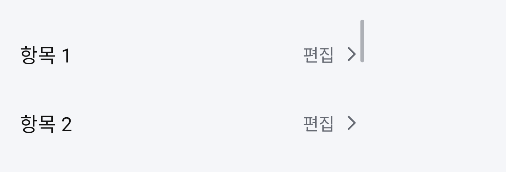
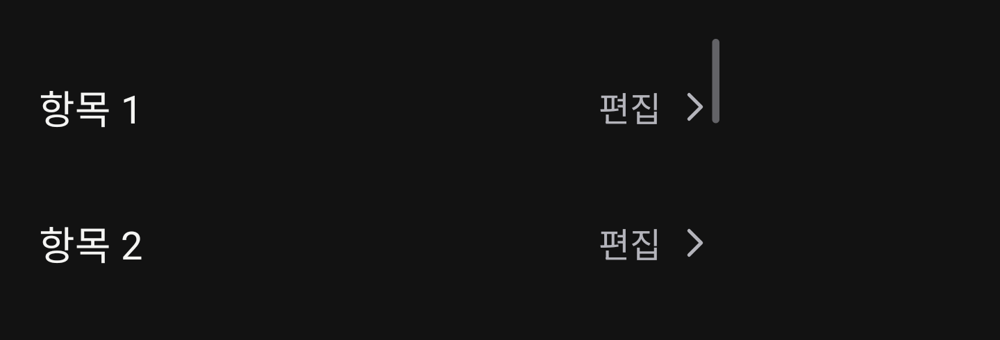

studioScrollIndicator
스크롤할 수 있는 영역의 위치를 보조 표식으로 표시합니다.
- 컴포넌트 ID
studio-scroll-indicator- 분류
- 탐색
- 구현
studioScrollIndicator·MyWidget/app/src/main/java/com/mywidget/editor/core/designsystem/component/StudioScrollIndicator.kt:17- 주요 API
- Modifier.studioScrollIndicator(ScrollState 또는 LazyListState)
- 지원 상태
- 스크롤 없음
- 스크롤 가능
- 끝
- 변형
- 일반 세로 목록
- 지연 목록
- 크기
- 위치는 뷰포트와 전체 콘텐츠에 비례
- 테마·토큰
- onSurfaceVariant
- 접근성·사용 규칙
- 시각 표식이며 실제 스크롤·접근성 동작은 부모가 소유합니다.
- 공통 사용 여부
- 시트 본문·인스펙터·시간대와 선택 목록에서 사용
- 설계 품질
- 스크롤 상태를 별도로 소유하지 않음
- 판단
- 유지
- 판단 근거
- 같은 영역의 스크롤 정책과 그림 책임을 분리합니다.
- 구현·문서
- 현재 소스 위치와 심볼 확인
- 렌더링
- 네이티브 캡처 있음
코드 예시
val scroll = rememberScrollState()
Column(Modifier.size(width = 280.dp, height = 108.dp).studioScrollIndicator(scroll).verticalScroll(scroll)) {
repeat(6) { index -> StudioOption("항목 ${index + 1}", trailing = { StudioOptionValue("편집") }) }
}Android 네이티브 예시
아래 캡처에 표시된 상태와 기기 조건을 확인했습니다.

411 × 891 dp · 560 dpi · 글꼴 1배 · API 35 · ko-KR
캡처 기준 HEAD
28c96a452 · 소스 지문 2926a62326fe · 2026-11-13T13:54:53.964821Z
411 × 891 dp · 560 dpi · 글꼴 1배 · API 35 · ko-KR
캡처 기준 HEAD
28c96a452 · 소스 지문 2926a62326fe · 2026-11-13T13:54:53.964821Z사용 화면
- 블록 추가
- 글자 상세와 세부 조판
- 색상·그라데이션 팔레트
- 레이어 인스펙터
- 정밀 위치·크기
- 목록 편집·표시·체크 설정
- 아이콘 라이브러리·관리
- 직접 아이콘 그리기
- 이미지 관리와 표시
- 수동 목표 편집
- 기능 연결 카탈로그
- 직접 입력과 연결 전환
- 기능 연결 상세 공통
- 시간대 검색
- 손글씨 메모 연결
- 터치 인터랙션 목록
- 터치 동작 1단계 · 대상
- 터치 동작 2단계 · 상태
- 터치 동작 3단계 · 액션
- 인터랙션 테스트 모드
- 설치 위젯 기능 연결 옵션
- 설치 위젯 기본 아이콘 편집
- 디자인 시스템 쇼케이스